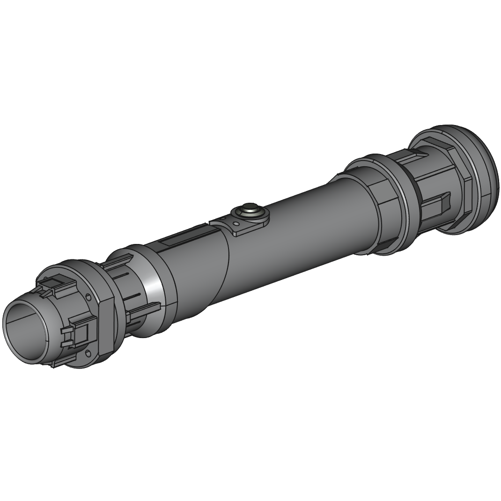
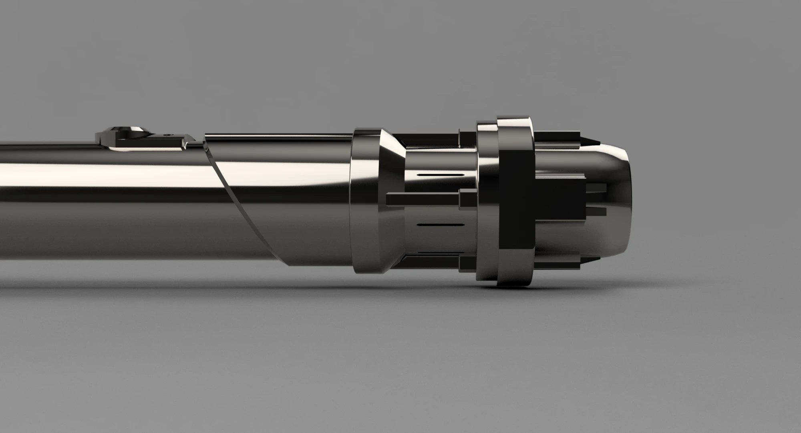
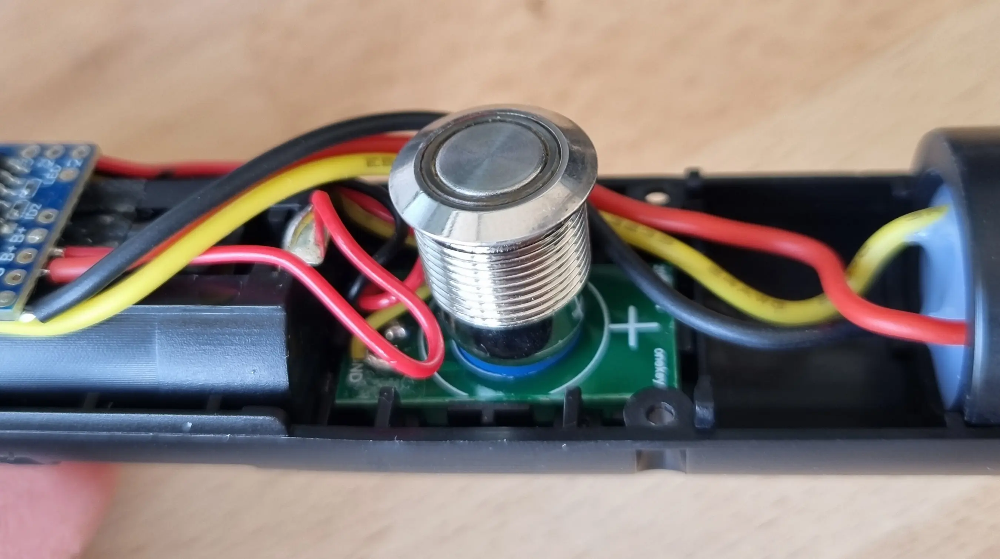
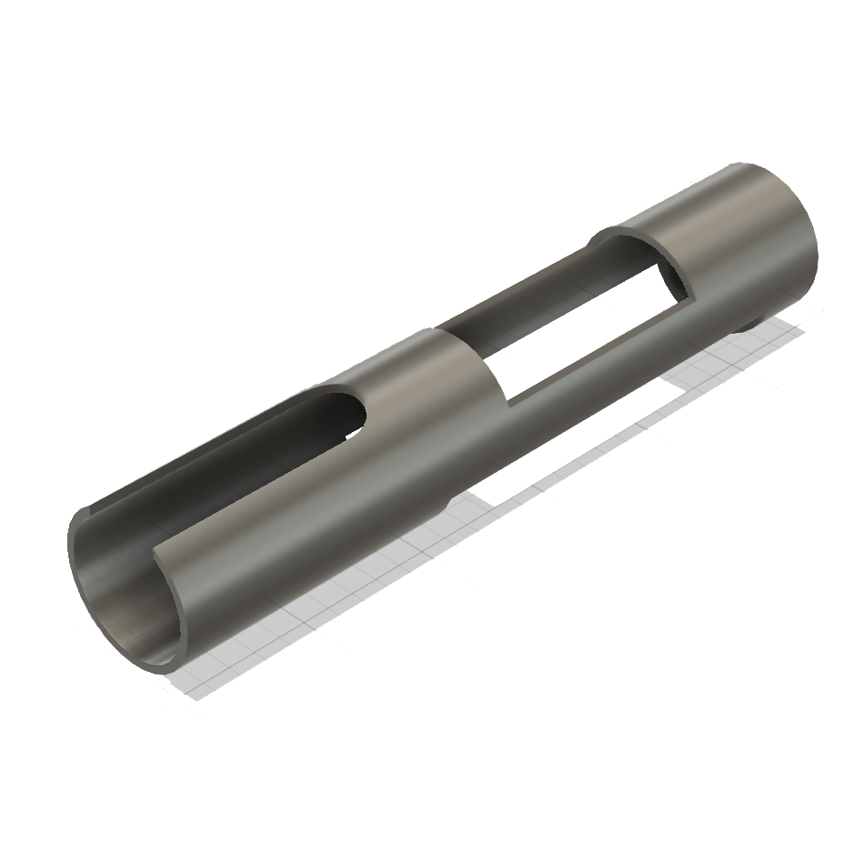
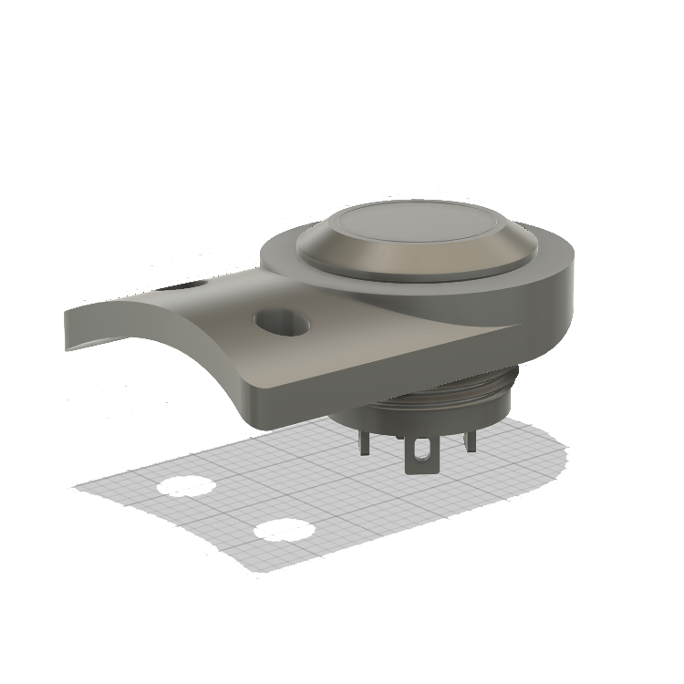

Lightsaber
Ever since I was a child, I’ve wanted my own lightsaber. While it’s possible to buy one, designing and building my own always seemed far more interesting. I initially created a design consisting of 10 individual parts, intended to be manufactured using a mill and lathe. Since I didn’t have access to either machine, the project never progressed beyond the design stage.

Several months later, a friend mentioned that a new Selective Laser Melting (SLM) 3D printer was being set up at their workplace and required calibration. Through this, I had the opportunity to 3D print metal parts. This motivated me to redesign the lightsaber entirely, with two main goals:
- Include electronics and a blade: The original design was purely a display piece, with no space for electronics and an emitter diameter too small for a functional blade.
- Reduce part count: The abundance of small components was supposed to simplify machining. With 3D printing, more complex geometries can be produced as single parts, reducing overhead and increasing the likelihood of completing the project.
New Design
Designing the new version came with several challenges. I didn’t yet have the electronics core or the blade, making it difficult to define exact dimensions. On top of that, the printer calibration window was limited, which meant I had to work under significant time pressure. As a result, I couldn’t be entirely sure that all parts would fit together, or even how the final assembly would work.

Fortunately, many lightsaber components are standardized, allowing compatibility across different manufacturers. In particular, blade diameters are fairly consistent. After some research, I based my design on parts sold by NSabers, since both blades and electronics could be sourced separately. I chose the 1-inch (25.4 mm) blade. The diameter of the electronics core wasn’t specified, so I slightly oversized the grip to ensure clearance. As it turned out, the core also had a diameter of 25.4 mm.
With these constraints in mind, I iterated on the design until I reached a result I was happy with, taking inspiration from existing models and concept art. The parts were designed in Autodesk Fusion, while renders and animations were created in Blender. The final hilt consists of five separate components:
- Grip: A simple aluminium tube with a 35 mm outer diameter and 3 mm wall thickness. This reduces cost and avoids unnecessary 3D printing.
- Emitter: The top section where the blade extends from, attached to the joiner with screws.
- Joiner: The second part of the upper assembly. Ideally, this would have been a single component with the emitter, but it was split to avoid large overhangs during printing. Small slits were added to allow light to pass through.
- Pommel: The bottom section, into which the grip slides and is secured with screws at four specified points.
- Button Adapter: Designed after completing the electronics, this part mounts the activation button to the grip.

Throughout the design process, I followed SLM design guidelines as closely as possible to minimize support material and ensure printability. Once complete, I exported the parts as separate .obj files and sent them for printing.
Printed Parts
Upon receiving two of the three main components, it was clear that the machine parameters hadn’t yet been fully optimized. The parts showed consistent burn patterns and fused support structures. Fortunately, the emitter turned out quite well, as it wasn't reliant on support structures. The joiner, however, was more problematic due to its complex geometry.


I initially attempted to manually remove the supports and clean up the joiner, but since the parts were printed in steel, this proved extremely difficult. The emitter, however, was successfully finished through extensive hand filing, followed by a milling pass (after many hours were spent removing a few millimeters by hand). While not perfect, the final emitter looks great and is dimensionally accurate.
Since the joiner was unusable and the pommel hadn’t been printed due to time constraints, I needed an alternative manufacturing solution. Fortunately, another friend offered to print the remaining parts. This machine had been properly calibrated, and the results were excellent. The successful prints confirmed that the design was well suited for additive manufacturing.
The pommel, unlike the earlier components, was printed in titanium rather than steel. It looks and feels excellent, but the difference in material results in a slight color mismatch between parts. This is something to consider for future iterations.

Electronics
Once all components were ready and I was confident the project could be completed, I purchased a used lightsaber to harvest the electronics core and blade. When selecting these, it’s important to understand the two main lighting systems:
- Baselit: Essentially an LED flashlight inside the hilt, with a diffused blade that spreads the light. Brightness is highest near the base, creating a noticeable gradient. These are generally cheaper and more durable, making them better for dueling.
- Neosaber: The blade contains an internal LED strip powered through electrical contacts at the base. This allows for even illumination, higher brightness, and dynamic effects such as ignition and retraction animations. However, these blades are more fragile.

Since I did not intend to use the lightsaber for duelling and wanted it to look good, I bought a used saber with a neopixel blade from which I subsequently removed the electronics core. This was a cost saving measure since buying the blade and electronics new would have been more expensive. The electronic core's length of 149mm, also meant that packaging would not be an issue.
Despite the fact that the setup was fully functional, there was an issue that bugged me. Likely due to mass manufacturing requirements, the button did not sit flush with the grip, rather it was integrated into the electronics core and could then be pushed up through an oversised hole (using a screw on the underside).


While fully functional, I was unhappy with the gap this left within the grip. After the extensive effort I did not want the sole interaction method to look or feel unpolished, so I came up with a way to insert the button from the outside and connect it to the electronics core during assembly. I did this by unsoldering the PCB and soldering and crimping on a JST Connector to both the button and the microcontroller located within the core. This allows me to join the JST Connectors while the electronic core is already inserted. The button can then be inserted from the outside and attached directly to the grip.
Assembly
In order to assemble the lightsaber, the aluminium tube was cut to length and then sanded down considerably. Because the 3D printed parts were intentionally oversized there would be no sloppy tolerances between parts, however it did require extensive post-processing to ensure a friction fit. In hindsight, a liner might be a more effective solution. Before being able to assemble the lightsaber, two additional parts had to be designed and printed:
- Electronics Sleeve: Since the Electronics core had a diameter of 25.4mm and the aluminium tube an inner diameter of 29mm, I had to design and 3D print a sleeve that goes around the electronics to ensure a friction fit. All cutouts and hole locations are preserved for assembly
- Button Adapter: A new button mounting solution was required, so I designed a small adapter plate that allows the button to sit flush on a flat surface, while perfectly following the contour of the grip. Two holes provide a method for fixing the adapter directly to the grip. This was then sent to be 3D printed out of steel by JLCPCB.


Finally all parts are complete and ready for assembly. Holes are drilled through the 3D printed components as well as the grip. The holes inside of the tube are tapped with M3 threads. Ho